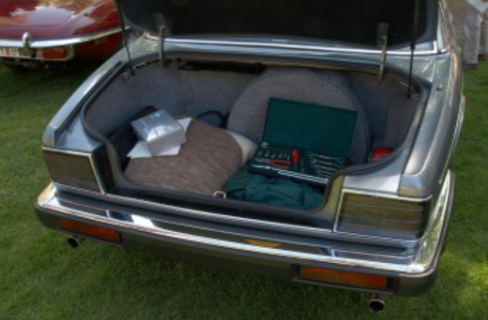
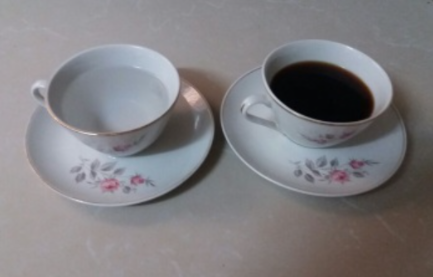
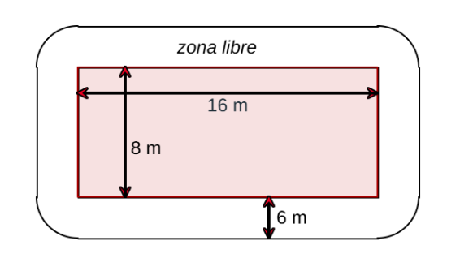
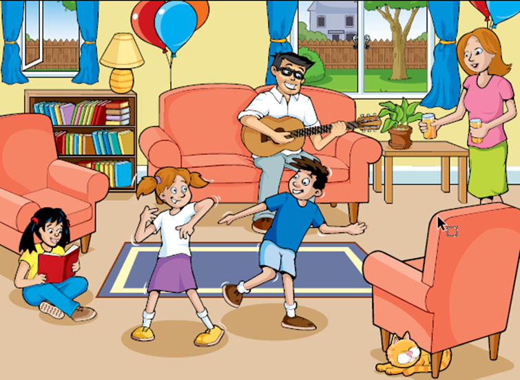
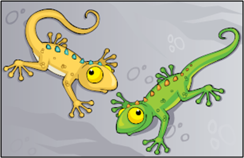
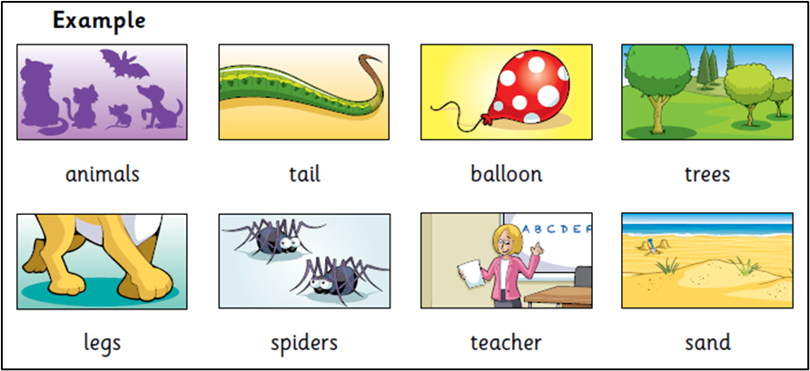
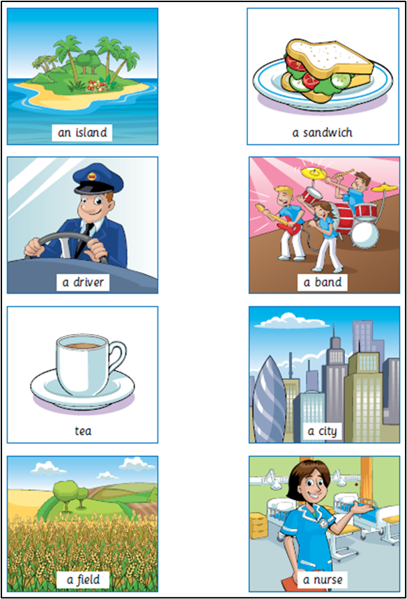

Prueba de Rendimiento - Nivel Principiante
Aldeas Infantiles
Una campaña de Aldeas Infantiles SOS gana la 2ª edición de Notodopublifest.com
Óscar Alonso Casquero y Esteban Franco, con su campaña publicitaria "Cartones" para Aldeas Infantiles SOS, han ganado el gran premio del jurado de notodopublifest.com, dedicado en esta ocasión a la publicidad en prensa. El certamen ha tenido un alto índice de participación, con 4808 piezas llegadas desde 17 países diferentes.
Notodopublifest ha celebrado la segunda edición de notodopublifest.com, el festival de publicidad "Hecho por Mí". Como indica el propio nombre del festival, se parte del hecho de pensar que todo el mundo puede ser artista.
¿Por qué no intentarlo sin más intención que jugar a inventar, a crear, a hacer cultura, y optar a unos premios que pretenden convertir este festival en un cuadrilátero al que, sin lugar a duda, merezca la pena subir?
| A juzgar por la información contenida en el texto, "Aldeas Infantiles" es: | ||
|---|---|---|
| A) | Un club social para niños. | |
| B) | Un centro para niños huérfanos. | |
| C) | Un internado para niños con problemas de conducta. | |
| D) | Una ONG que ayuda a niños sin hogar. | |
Aldeas Infantiles
Una campaña de Aldeas Infantiles SOS gana la 2ª edición de Notodopublifest.com
Óscar Alonso Casquero y Esteban Franco, con su campaña publicitaria "Cartones" para Aldeas Infantiles SOS, han ganado el gran premio del jurado de notodopublifest.com, dedicado en esta ocasión a la publicidad en prensa. El certamen ha tenido un alto índice de participación, con 4808 piezas llegadas desde 17 países diferentes.
Notodopublifest ha celebrado la segunda edición de notodopublifest.com, el festival de publicidad "Hecho por Mí". Como indica el propio nombre del festival, se parte del hecho de pensar que todo el mundo puede ser artista.
¿Por qué no intentarlo sin más intención que jugar a inventar, a crear, a hacer cultura, y optar a unos premios que pretenden convertir este festival en un cuadrilátero al que, sin lugar a duda, merezca la pena subir?
Foro de Aves
Has ido a visitar a unos parientes que recientemente se han mudado a una granja para criar gallinas.
Tú le preguntas a tu tía: "¿Cómo aprendiste a criar gallinas?".
Ella dice: "Hablamos con mucha gente que cría gallinas, y hay muchos recursos en Internet. Por ejemplo, hay un foro sobre la salud de las aves que me gusta visitar. Me fue de gran ayuda cuando hace poco una de mis gallinas se hizo daño en la pata. Te voy a enseñar la conversación que tuvimos."

| ¿Por qué Inma_88 decide publicar su pregunta en un foro de internet? | ||
|---|---|---|
| A) | Porque no sabe cómo encontrar un veterinario. | |
| B) | Porque cree que el problema de su gallina no es grave. | |
| C) | Porque quiere ayudar a su gallina lo antes posible. | |
| D) | Porque no puede permitirse un veterinario. | |
Foro de Aves
Has ido a visitar a unos parientes que recientemente se han mudado a una granja para criar gallinas.
Tú le preguntas a tu tía: "¿Cómo aprendiste a criar gallinas?".
Ella dice: "Hablamos con mucha gente que cría gallinas, y hay muchos recursos en Internet. Por ejemplo, hay un foro sobre la salud de las aves que me gusta visitar. Me fue de gran ayuda cuando hace poco una de mis gallinas se hizo daño en la pata. Te voy a enseñar la conversación que tuvimos."
Trabajo con Calor
Pedro está haciendo reparaciones en una casa vieja. Ha dejado una botella de agua, algunos clavos metálicos y un trozo de madera dentro del maletero de su coche. Después de que el coche ha estado tres horas al sol, la temperatura dentro del coche llega a unos 40°C.
| ¿Qué les pasa a los objetos del coche? | Sí | No | |
|---|---|---|---|
| A) | Los tres cuerpos alcanzan el equilibrio térmico. | ||
| B) | Todos tienen la misma temperatura. | ||
| C) | Después de un rato los clavos están rojos incandescentes. | ||
| D) | Todos tienen diferente temperatura. | ||
Trabajo con Calor
Para beber durante el día, Pedro tiene una taza de café caliente a unos 80ºC de temperatura y una taza con agua mineral fría a unos 6ºC de temperatura. Las tazas son del mismo material y tamaño, y el volumen contenido en cada taza es el mismo. Pedro deja las tazas en una habitación donde la temperatura es de unos 16ºC.
| ¿Cuáles serán probablemente las temperaturas del café y del agua mineral después de 10 minutos? | ||
|---|---|---|
| A) | 68ºC y 18ºC. | |
| B) | 68ºC y 10ºC. | |
| C) | 16ºC y 16ºC. | |
| D) | 68ºC y 6ºC. | |
Biodiversidad
La biodiversidad es clave para la gestión del medio ambiente.
Un ecosistema que mantiene una biodiversidad alta (es decir, una amplia variedad de seres vivos) se
adapta
con mayor probabilidad a los cambios medioambientales causados por el hombre que tenga poca
biodiversidad.
Consideremos las dos redes tróficas representadas en el diagrama. Las flechas van desde el organismo
que es comido hasta el que se lo come. Estas redes tróficas son muy simples en comparación con las
redes
tróficas de los ecosistemas reales, pero aun así reflejan una diferencia entre los ecosistemas
más diversos y los menos diversos.
La red trófica B representa una situación con biodiversidad muy baja, donde en algunos niveles el
flujo
de alimento incluye solo un tipo de organismo. La red trófica A representa un ecosistema más diverso
y,
por lo tanto, con más alternativas en los flujos de alimento.
En general, la pérdida de biodiversidad debería ser considerada en serio, no solo porque los
organismos
que se están extinguiendo representan una gran pérdida tanto por razones éticas como utilitarias
(beneficios útiles), sino también porque los organismos que sobrevivan serán más vulnerables a la
extinción en el futuro.
| En el texto se lee que "La red trófica A representa un ecosistema más diverso y, por lo tanto, con más alternativas en los flujos de alimento". Observa la RED TRÓFICA A, solo dos animales de esta red tienen tres fuentes directas de alimentación. ¿Cuáles son? | ||
|---|---|---|
| A) | El pájaro de la miel y el petirrojo. | |
| B) | La cigarra saltadora y el gato marsupial. | |
| C) | El gato marsupial y el pájaro de la miel. | |
| D) | La avispa parásita y el gato marsupial. | |
| E) | El gato marsupial y el pájaro carnicero. | |
Biodiversidad
La biodiversidad es clave para la gestión del medio ambiente.
Un ecosistema que mantiene una biodiversidad alta (es decir, una amplia variedad de seres vivos) se
adapta
con mayor probabilidad a los cambios medioambientales causados por el hombre que tenga poca
biodiversidad.
Consideremos las dos redes tróficas representadas en el diagrama. Las flechas van desde el organismo
que es comido hasta el que se lo come. Estas redes tróficas son muy simples en comparación con las
redes
tróficas de los ecosistemas reales, pero aun así reflejan una diferencia entre los ecosistemas
más diversos y los menos diversos.
La red trófica B representa una situación con biodiversidad muy baja, donde en algunos niveles el
flujo
de alimento incluye solo un tipo de organismo. La red trófica A representa un ecosistema más diverso
y,
por lo tanto, con más alternativas en los flujos de alimento.
En general, la pérdida de biodiversidad debería ser considerada en serio, no solo porque los
organismos
que se están extinguiendo representan una gran pérdida tanto por razones éticas como utilitarias
(beneficios útiles), sino también porque los organismos que sobrevivan serán más vulnerables a la
extinción en el futuro.
| Las redes tróficas A y B están en diferentes localidades. Supón que las avispas parásitas se extinguieron en ambos lugares. ¿Cuáles de las siguientes serían la mejor predicción y explicación del efecto que tendría este hecho en las redes tróficas? | ||
|---|---|---|
| A) | El efecto sería mayor en la red trófica B porque el lagarto solo tiene una fuente de comida en la red B. | |
| B) | El efecto sería mayor en la red trófica A porque el lagarto tiene varias fuentes de comida en la red A. | |
| C) | El efecto sería mayor en la red trófica A porque el lagarto tiene una fuente de comida en la red A. | |
| D) | El efecto sería mayor en la red trófica B porque el lagarto tiene varias fuentes de comida en la red B. | |
¿Qué Coche?
Cris acaba de sacarse el carné de conducir y quiere comprar su primer coche.
La siguiente tabla muestra las características de cuatro coches que vio en un concesionario de la
zona.
Cris quiere un coche que cumpla todas estas condiciones:
| ¿Qué coche cumple las condiciones de Cris? | ||
|---|---|---|
| A) | El Alpha. | |
| B) | El Bolte. | |
| C) | El Castel. | |
| D) | El Dezal. | |
¿Qué Coche?
Cris acaba de sacarse el carné de conducir y quiere comprar su primer coche.
La siguiente tabla muestra las características de cuatro coches que vio en un concesionario de la
zona.
Cris quiere un coche que cumpla todas estas condiciones:
| ¿Qué coche tiene mayor cilindrada? | ||
|---|---|---|
| A) | El Alpha. | |
| B) | El Bolte. | |
| C) | El Castel. | |
| D) | El Dezal. | |
Club de Voley
En un pueblo de la costa, el club de Voley Playa ha organizado un campeonato para promocionar este deporte.
Según la normativa internacional, la cancha de juego debe ser un rectángulo de 16 m x 8 m, rodeado por una zona libre, con un mínimo de 3 m de ancho.
La cancha que se ha construido en el pueblo tiene la siguiente forma:
| El área de la zona libre se puede descomponer en: | ||
|---|---|---|
| A) | Cuatro rectángulos. | |
| B) | Cuatro rectángulos y un círculo. | |
| C) | Dos rectángulos y dos círculos. | |
| D) | Cuatro rectángulos y cuatro círculos. | |
Club de Voley
En un pueblo de la costa, el club de Voley Playa ha organizado un campeonato para promocionar este deporte.
Según la normativa internacional, la cancha de juego debe ser un rectángulo de 16 m x 8 m, rodeado por una zona libre, con un mínimo de 3 m de ancho.
La cancha que se ha construido en el pueblo tiene la siguiente forma:
| ¿Cuál es la superficie de la zona libre? | ||
|---|---|---|
| A) | 401,04 m². | |
| B) | 413,00 m². | |
| C) | 395,00 m². | |
| D) | 807,04 m². | |
Preguntas Visuales
Look and select.There are two examples.
These are grapes.
(Example)
This is a house.
(Example)
This is a helicopter.
This is a clock.
These are shells.
This is a sock.
These are chairs.
Preguntas Visuales
| Look and read. Select yes or no. | |||
|---|---|---|---|
| Example | Yes | No | |
| A) | There are two armchairs in the living room. (Example) | ||
| B) | The big window is open. (Example) | ||
| Questions | Yes | No | |
| C) | The man has got black hair and glasses. | ||
| D) | There is a lamp on the bookcase. | ||
| E) | Some of the children are singing. | ||
| F) | The woman is holding some drinks. | ||
| G) | The cat is sleeping under an armchair. | ||
Preguntas Visuales
Choose a word from the box. Write the correct word next to numbers 1–5. There is one example.
 Lots of lizards are very small but some are really big. Many lizards are green, grey or yellow. Some like eating (1) and some like eating fruit. A lizard can run on its four (2) and it has a long (3) at the end of its body. Many lizards live in (4) but, at the beach, you can find some lizards on the (5) Lizards love sleeping in the sun!
Preguntas Visuales
Look and read. Look and read. Choose the correct words and select from the list.There is one example
1. The people in this sometimes sing or play guitars. (Example)
2. This person helps people who aren't well in hospital.
3. Some people put milk or lemon in this drink.
4. There are lots of cars, buses and people in this busy place.
5. You can put cheese or meat between bread to make this.
6. This is part of a farm where you often see vegetable plants.